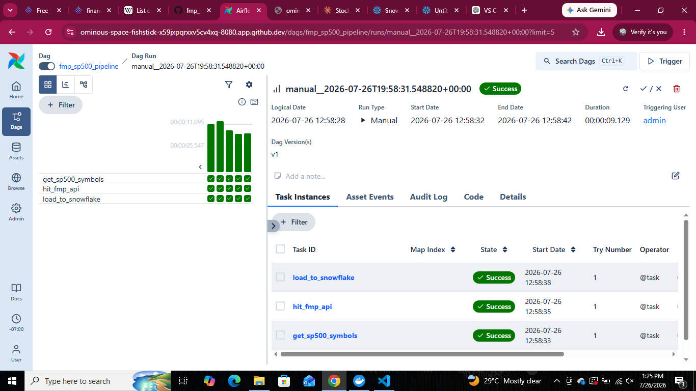
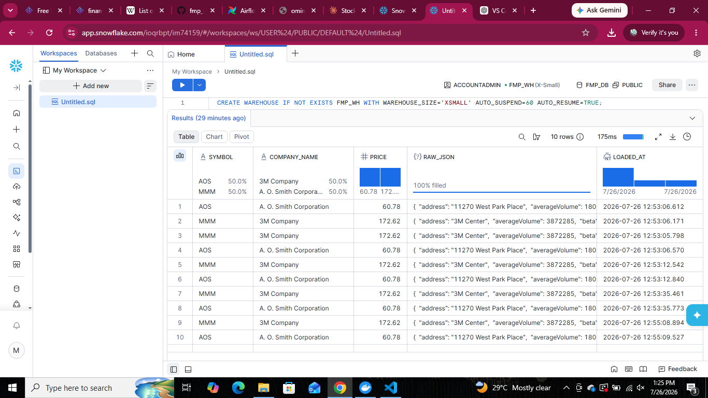
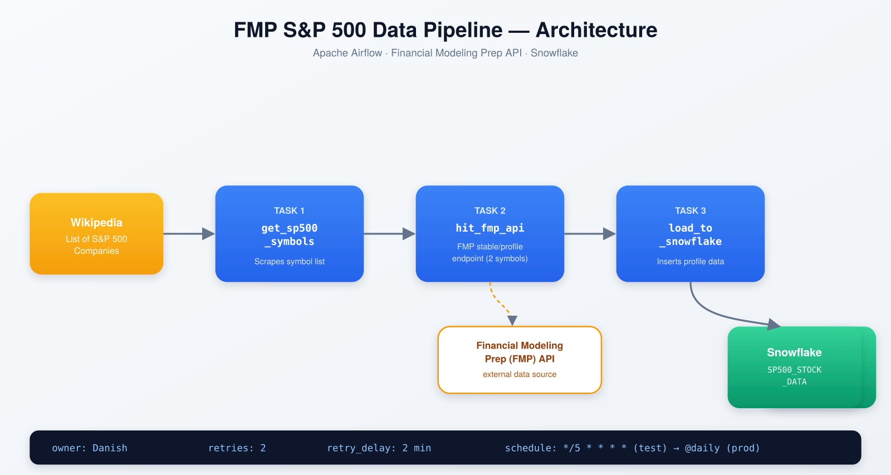

A pipeline that wakes up, fetches the S&P 500, and puts it in a warehouse — on its own.
Three Airflow tasks, one external API, one Snowflake table. Built to practice the parts of data engineering that don't show up in tutorials: SSL handshakes, VARIANT columns, and retries that actually retry.
Built with
Every piece here was chosen because it's what a real pipeline of this shape would use — not the easiest option.
What actually happened, in order
Three real issues came up while building this — each fixed at the source rather than worked around.
Wikipedia returned 403 Forbidden
pandas.read_html was fetching without a browser-like identity. Fixed by requesting the page with a proper User-Agent header before parsing.
Snowflake SSL hostname mismatch
Account identifier needed the region joined with a hyphen, not split across separate connection fields.
VARIANT vs VARCHAR on insert
Raw JSON needed PARSE_JSON() — and Snowflake only accepts that inside an INSERT ... SELECT, not a plain VALUES clause.
It runs
Three consecutive green tasks, and the rows to prove it landed in Snowflake.


